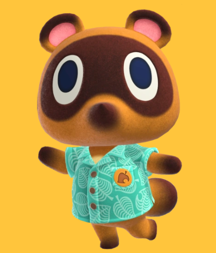

The Nook’s are a family of Tanuki who has been building up the Island community since 2020. Nook’s cranny was started by Tom Nook himself in 2001, and since then Nook inc. has grown exponentially! Even still our focus is always on family and building our local community, in fact, Tom Nook built this community!

Tom Nook
Tom Nook is the creator of Nook inc. He started out in 2001 in Animal Forest, opening the first ever Nook's Cranny. Since then Tom has dabbled in home renovations and loans, upgrading his storefronts, and most recently running a Destination Vacation Island business. This is the business he is currently working on.
Timmy
Timmy is the older twin brother of Tommy. He and his brother were rescued and adopted by Tom Nook. Together Timmy and Tommy have learned the business in and out from Tom. Timmy is now the head of Nook’s Cranny since Tom has moved on to different endeavors. Timmy is an intelligent and business-minded young man. He keeps the store running smoothly, and is always looking for the best deals for you.
Tommy
Tommy is the adopted son of Tom, twin to Timmy, and the creative mind behind Nook’s Cranny. Tommy loves to garden and can help you with all your flower and tool needs! While he’s a bit shy sometimes, Tommy is always ready to lend a helping hand and answer any of your questions – especially if it’s about gardening.